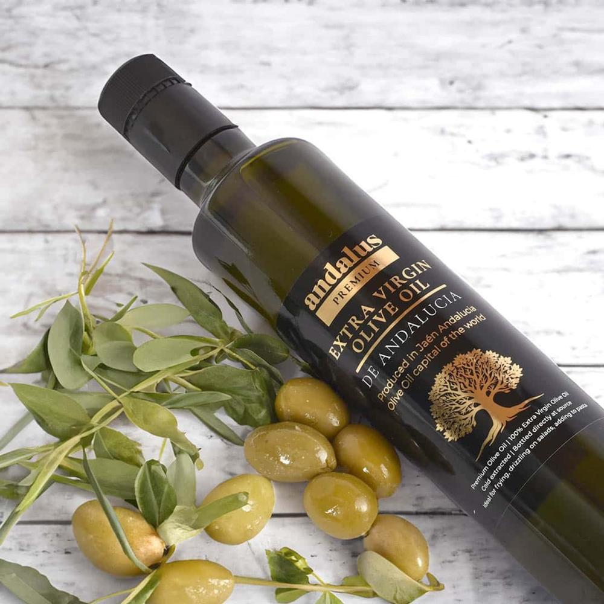

Our story
A wrong turn changed everything.
It started as a holiday. A visit to the Alhambra in Granada — the palaces, the courtyards, the long drive south through Andalucía.
Then a wrong turn. Instead of the motorway, the road ran into the olive groves of Jaén — and kept running. Trees in every direction, to the horizon, in the place they call the olive oil capital of the world.
“Produced in Jaén, Andalucía — olive oil capital of the world.”
From the Andalus labelAmong those groves are families who have pressed olives for generations. Meeting those producers is what inspired Andalus.
Andalus was created to bring authentic Spanish extra virgin olive oil from family groves in Jaén to the UK: one estate, 100% Picual, harvested early each November, cold-extracted and bottled at source in small batches.
The harvest
Why November?
Harvested early, while the olives are still green — fresher, more vibrant oil, a distinctive peppery finish, and naturally high polyphenols.
- Early harvest
- Picual
- Cold-extracted
- Small batches

